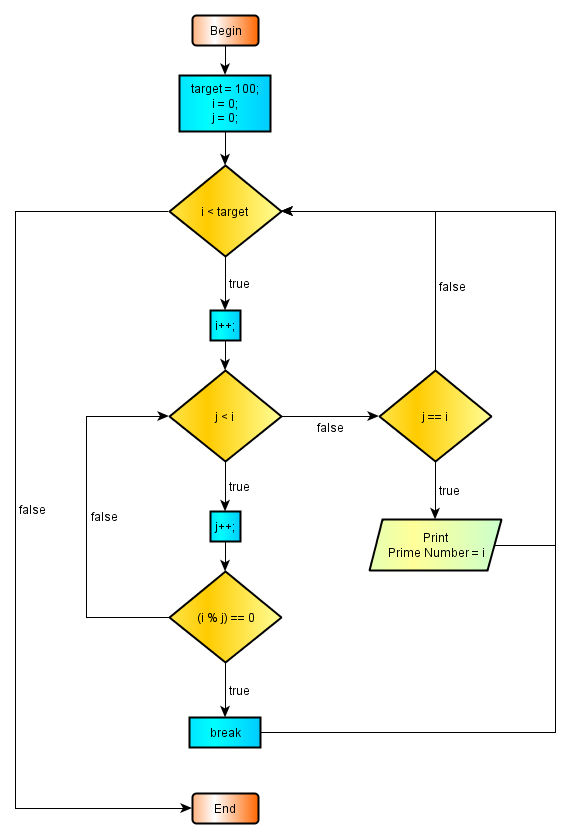

2.8.5 - Nested Loops
The meaning of nested loops is a loop inside a loop. Nested loops are frequently applied especially with multidimensional arrays. We will profit from nested loops for detecting the prime numbers within first 100 integers. The inspriration of the program design comes from RoseIndia.net
Natural numbers consist a set of positive numbers beginning from 1 as:
{1 , 2 , 3 , 4 , 5 , 6 , ......}
Natural numbers has ttwo subsets, prime numbers and composite numbers. Prime numbers are the numbers belonging to the natural numbers set, but having two exact divisors. there are the number itself and 1. In other words prime numbers are the only natural numbers which may evenly divisible only by itself. There is many programs which may generate prime numbers but the one below is from the among the simple programs for prime number detection. This program benefit from nested loop structure for the calculations. First the flowchart :

2.8.5 image - 1 : Flowchart of the Detection of Prime Numbers
Now, the program :
package preliminary; public class PrimeNumbers { public static void main(String[] args){ int target = 110; for( int i = 0 ; i < target ; i++) { int j = 0; for( j = 0 ; j < j ; j++) { if ( (i % j) == 0) { break; } // end if } // end for if ( j == i) { System.out.println(" " + i); } // end if } // end for } // end main } //end class PrimeNumbers
The result of this program:
Prime Number :
2 3 5 7 11 13 17 19 23 29 31 37 41 43 47 53 59 61 67 71 73 79 83 89 97
In the above program, the loop counter i is declared with the for loop declaration in the outer loop. This is because we do not need the loop counter i beyond the outer loop. In contrast the loop counter j of the inner loop is declared before the declaration of the for loop. This is because, we will need the value of the loop counter j after leaving the inner loop.
I know it may be seen diifult at athe first attempt to follow detailed programs alike the one above. But nothing is difficult in the reality. We should follow well established rules and all will go so smoothly that you can never imagine.
First we should study well the theoretical grounds of what we intend to programming. In the case above, we should not be a mathemetical expert, but we must study troughly the natuaral numbers set, prime numbers set and composite numbers. A computer programmer must be familiar with theoretical basis of what he is programming and there is no escape to that rule. No problem may be solved unles the question is completely understood. Never let anything to the chance. If anything may go wrong it will! Understand well what is expected from you and be sure that you supply these results with extreme reliability.
After having all the ground information about the subject, now inspect carefully and try to understand fully the flowsheet and the underlying program. Sometimes computer programs are more comphensive than the flowsheets and it is worth to inspect both for better catching the ideas for the problem. Sometimes it is also useful to construct a pseudocode, an intermediate program schema as a basis for programming but independent of the program language to be used (pseudo means fake in ancient Greek).
Inspect troughly the flowsheet given and the program design which is applied. Look whether there is a difference between what is said and what is done. If you have better assumptions apply them in a separate program and compare with the original. Try to change the program presentation, everybody has his taste for delivering data and presenting results. Yours may be superior to the present layout.
Test diligently the obtained results. Today wesites are enormeous source of information. Benefit this treasury to test the relevance of your results. It may also useful to make some hand calculation about the program, try to calculate yourself what is intended to calculated with program steps. Never deliver a program, unless your are absolutely sure that it is excessively tested and produces expected results with hundred percent confidence.
When you try to understand the flowsheet above, apply these principles beforehand. You will see that the apparent diffulty will be gone by more knowledge. Remember, we do not blame our competitor in tennis, we just blame ourselves for not having more training before accepting the challenge.
Sometimes we may need to acess the outer loop from the inner loop for breaking or skipping the actual iteration of the outer loop. This is achived by labeling the outer loop. In Java, labels are simple identifiers followed by a colon. A nested loop within a labelled outer loop may be applied as follows:
... outerLoop: for( int i = 0 ; i < 101 ; i++) { ... innerLoop : for( j = 0 ; j < 101 ; j++) { ... continue outerLoop ; } // end innerLoop } // end outerLoop
Now we are leaving the presentation of repetitive tasks. We will use them frequently in all the areas of programming during this course. Especially arrays go well with loops. Since the arrays in Java are of object structure, we will introduce the arrays after we have covered object oriented programming technology, coming in the next chapter.